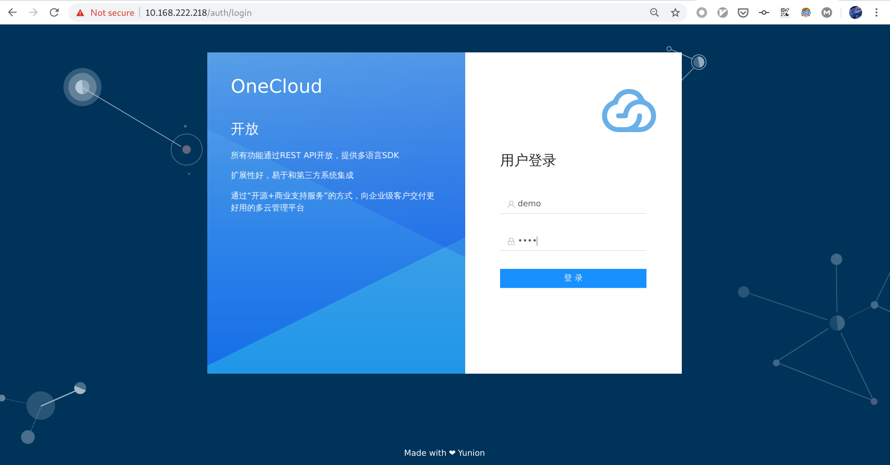
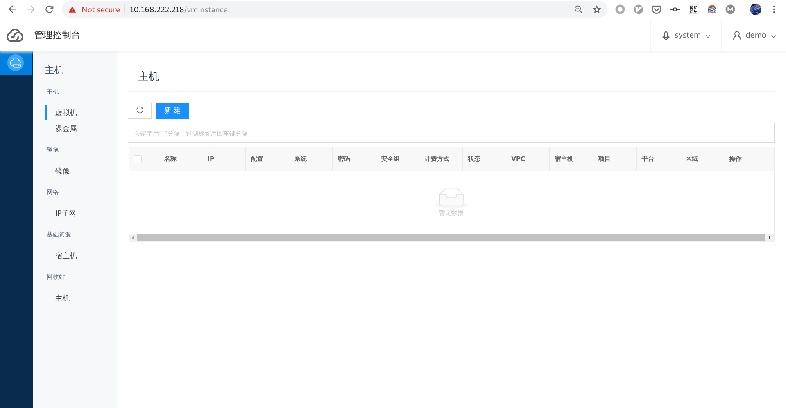

部署集群
环境准备
云联壹云 相关的组件运行在 kubernetes 之上，环境以及相关的软件依赖如下:
- 操作系统: Centos 7.6
- 最低配置要求: CPU 4核, 内存 8G, 存储 150G
- 数据库: mariadb (CentOS 7自带的版本：Ver 15.1 Distrib 5.5.56-MariaDB）
- docker: ce-19.03.9
- kubernetes: v1.15.8
需要能访问如下网址，如果企业有外网隔离规则，则需要打开相应白名单：
- CentOS YUM网络安装源
- https://iso.yunion.cn/
- https://registry.cn-beijing.aliyuncs.com
- https://meta.yunion.cn
- https://yunionmeta.oss-cn-beijing.aliyuncs.com
安装配置 mariadb
mariadb 作为服务数据持久化的数据库，可以部署在其它节点或者使用单独维护的。下面假设还没有部署 mariadb，在控制节点上安装设置 mariadb。
为了方便运行维护，mariadb推荐打开两个参数设施：
- skip_name_resolve：取消域名解析
- expire_logs_days=30：设置binlog的超时时间为30天，超过30天的binglog自动删除
$ MYSQL_PASSWD='your-sql-passwd'
# 安装 mariadb
$ yum install -y epel-release mariadb-server
$ systemctl enable --now mariadb
$ mysqladmin -u root password "$MYSQL_PASSWD"
$ cat <<EOF >/etc/my.cnf
[mysqld]
datadir=/var/lib/mysql
socket=/var/lib/mysql/mysql.sock
# Disabling symbolic-links is recommended to prevent assorted security risks
symbolic-links=0
# Settings user and group are ignored when systemd is used.
# If you need to run mysqld under a different user or group,
# customize your systemd unit file for mariadb according to the
# instructions in http://fedoraproject.org/wiki/Systemd
# skip domain name resolve
skip_name_resolve
# auto delete binlog older than 30 days
expire_logs_days=30
[mysqld_safe]
log-error=/var/log/mariadb/mariadb.log
pid-file=/var/run/mariadb/mariadb.pid
#
# include all files from the config directory
#
!includedir /etc/my.cnf.d
EOF
$ mysql -uroot -p$MYSQL_PASSWD \
-e "GRANT ALL ON *.* to 'root'@'%' IDENTIFIED BY '$MYSQL_PASSWD' with grant option; FLUSH PRIVILEGES;"
$ systemctl restart mariadb
安装配置 docker
安装 docker
$ yum install -y yum-utils bash-completion
# 添加 yunion 云联壹云 rpm 源
$ yum-config-manager --add-repo https://iso.yunion.cn/yumrepo-3.4/yunion.repo
$ yum install -y docker-ce-19.03.9 docker-ce-cli-19.03.9 containerd.io
配置 docker
$ mkdir -p /etc/docker
$ cat <<EOF >/etc/docker/daemon.json
{
"bridge": "none",
"iptables": false,
"exec-opts":
[
"native.cgroupdriver=systemd"
],
"data-root": "/opt/docker",
"live-restore": true,
"log-driver": "json-file",
"log-opts":
{
"max-size": "100m"
},
"registry-mirrors":
[
"https://lje6zxpk.mirror.aliyuncs.com",
"https://lms7sxqp.mirror.aliyuncs.com",
"https://registry.docker-cn.com"
]
}
EOF
启动 docker
$ systemctl enable --now docker
安装 云联壹云 依赖内核
这里需要安装我们编译的内核，这个内核是基于上游 Centos 3.10.0-1062 编译的，默认添加了 nbd 模块，nbd 模块用于镜像相关的操作。
# 安装内核
$ yum install -y \
kernel-3.10.0-1062.4.3.el7.yn20191203 \
kernel-devel-3.10.0-1062.4.3.el7.yn20191203 \
kernel-headers-3.10.0-1062.4.3.el7.yn20191203
# 重启系统进入内核
$ reboot
# 重启完成后，查看当前节点内核信息
# 确保为 3.10.0-1062.4.3.el7.yn20191203.x86_64
$ uname -r
3.10.0-1062.4.3.el7.yn20191203.x86_64
安装配置 kubelet
从 云联壹云 rpm 的 yum 源安装 kubernetes 1.15.8，并设置 kubelet 开机自启动
$ yum install -y bridge-utils ipvsadm conntrack-tools \
jq kubelet-1.15.8-0 kubectl-1.15.8-0 kubeadm-1.15.8-0
$ echo 'source <(kubectl completion bash)' >> ~/.bashrc && source ~/.bashrc
$ source /etc/profile
$ systemctl enable kubelet
安装完 kubernetes 相关的二进制后，还需要对系统做一些配置并启用 ipvs 作为 kube-proxy 内部的 service 负载均衡
# 禁用 swap
$ swapoff -a
# 如果设置了自动挂载 swap，需要去 /etc/fstab 里面注释掉挂载 swap 那一行
# 关闭 selinux
$ setenforce 0
$ sed -i 's/SELINUX=enforcing/SELINUX=disabled/' /etc/selinux/config
# 禁用 firewalld
$ systemctl stop firewalld
$ systemctl disable firewalld
# 禁用 NetworkManager
$ systemctl stop NetworkManager
$ systemctl disable NetworkManager
$ ps -ef|grep dhcp | awk '{print $2}' |xargs kill -9
# 做一些 sysctl 的配置, kubernetes 要求
$ modprobe br_netfilter
$ cat <<EOF >> /etc/sysctl.conf
net.bridge.bridge-nf-call-iptables=1
net.bridge.bridge-nf-call-ip6tables=1
net.ipv4.ip_forward=1
EOF
$ sysctl -p
# 配置并开启 ipvs
$ cat <<EOF > /etc/sysconfig/modules/ipvs.modules
#!/bin/bash
ipvs_modules="ip_vs ip_vs_lc ip_vs_wlc ip_vs_rr ip_vs_wrr ip_vs_lblc ip_vs_lblcr ip_vs_dh ip_vs_sh ip_vs_fo ip_vs_nq ip_vs_sed ip_vs_ftp nf_conntrack_ipv4"
for kernel_module in \${ipvs_modules}; do
/sbin/modinfo -F filename \${kernel_module} > /dev/null 2>&1
if [ $? -eq 0 ]; then
/sbin/modprobe \${kernel_module}
fi
done
EOF
$ chmod 755 /etc/sysconfig/modules/ipvs.modules && bash /etc/sysconfig/modules/ipvs.modules && lsmod | grep ip_vs
部署集群
提示
如果要部署高可用集群，请先搭建负载均衡集群，参考 部署 HA 环境。
安装部署工具
先安装部署工具 ocadm 和云平台的命令行工具 climc:
# 安装 climc 云平台命令行工具 和 ocadm 部署工具
$ yum install -y yunion-climc yunion-ocadm
# climc 在 /opt/yunion/bin 目录下，根据自己的需要加到 bash 或者 zsh 配置文件里面
$ echo 'export PATH=$PATH:/opt/yunion/bin' >> ~/.bashrc && source ~/.bashrc
# 安装必要的服务，并启动和设置为开机自启
$ yum install -y yunion-executor-server && systemctl enable --now yunion-executor
部署 kubernetes 集群
接下来会现在当前节点启动 v1.15.8 的 kubernetes 服务，然后部署 云联壹云 控制节点相关的服务到 kubernetes 集群。
拉取必要的 docker 镜像
$ ocadm config images pull
使用 ocadm 部署 kubernetes 集群
提示
如果要进行高可用部署，并已经搭建好了负载均衡集群，需要在
ocadm init命令加上--control-plane-endpoint <vip>:6443参数，告诉 kubernetes 集群前端的 LoadBalancer vip，之后生成的配置就会都用这个 vip 当做控制节点的入口。
# 假设 mariadb 部署在本地，如果是使用已有的数据库，请改变对应的 ip
$ MYSQL_HOST=$(ip route get 1 | awk '{print $NF;exit}')
# 如果是高可用部署，记得在设置 EXTRA_OPT=' --control-plane-endpoint 10.168.222.18:6443'
$ EXTRA_OPT=""
$ #EXTRA_OPT=' --control-plane-endpoint 10.168.222.18:6443'
# 开始部署 kubernetes 以及 云联壹云 必要的控制服务，稍等 3 分钟左右，kubernetes 集群会部署完成
$ ocadm init --mysql-host $MYSQL_HOST \
--mysql-user root --mysql-password $MYSQL_PASSWD $EXTRA_OPT
...
Your Kubernetes and control-plane has initialized successfully!
...
提示
kubernetes 高可用部署需要 3 个节点，主要是 etcd 需要至少 3 个节点组成高可用集群。如果是高可用部署，请在另外两个节点执行
ocadm join --control-plane <vip>:6443部署控制服务，join 的另外两个节点会自动和当前的控制节点组成高可用集群。参考: 加入控制节点
kubernetes 集群部署完成后，通过以下命令来确保相关的 pod (容器) 都已经启动, 变成 running 的状态。
$ mkdir -p $HOME/.kube
$ sudo cp -i /etc/kubernetes/admin.conf $HOME/.kube/config
$ sudo chown $(id -u):$(id -g) $HOME/.kube/config
$ kubectl get pods --all-namespaces
NAMESPACE NAME READY STATUS RESTARTS AGE
kube-system calico-kube-controllers-648bb4447c-57gjb 1/1 Running 0 5h1m
kube-system calico-node-j89jg 1/1 Running 0 5h1m
kube-system coredns-69845f69f6-f6wnv 1/1 Running 0 5h1m
kube-system coredns-69845f69f6-sct6n 1/1 Running 0 5h1m
kube-system etcd-lzx-ocadm-test2 1/1 Running 0 5h
kube-system kube-apiserver-lzx-ocadm-test2 1/1 Running 0 5h
kube-system kube-controller-manager-lzx-ocadm-test2 1/1 Running 0 5h
kube-system kube-proxy-2fwgf 1/1 Running 0 5h1m
kube-system kube-scheduler-lzx-ocadm-test2 1/1 Running 0 5h
kube-system traefik-ingress-controller-qwkfb 1/1 Running 0 5h1m
local-path-storage local-path-provisioner-5978cff7b7-7h8df 1/1 Running 0 5h1m
onecloud onecloud-operator-6d4bddb8c4-tkjkh 1/1 Running 0 3h37m
创建 云联壹云 集群
当 kubernetes 集群部署完成后，就可以通过 ocadm cluster create 创建 云联壹云 集群，该集群由 onecloud namespace 里面 onecloud-operator deployment 自动部署和维护。
# 创建集群
# 如果要部署企业版的组件可以在 cluster create 的时候加上 --use-ee 参数
$ ocadm cluster create --wait
执行完 ocadm cluster create --wait 命令后，onecloud-operator 会自动创建各个服务组件对应的 pod，等待一段该命令执行完毕， 就可以通过访问 ‘https://本机IP:443’ 登入前端界面。
创建登录用户
当控制节点部署完成后，需要创建一个用于前端登录的用户。云平台的管理员认证信息由 ocadm cluster rcadmin 命令可以得到 , 这些认证信息在使用 climc 控制云平台资源时会用到。
# 获取连接 云联壹云 集群的环境变量
$ ocadm cluster rcadmin
export OS_AUTH_URL=https://10.168.222.218:30357/v3
export OS_USERNAME=sysadmin
export OS_PASSWORD=3hV3qAhvxck84srk
export OS_PROJECT_NAME=system
export YUNION_INSECURE=true
export OS_REGION_NAME=region0
export OS_ENDPOINT_TYPE=publicURL
提示
如果是高可用部署，这些 endpoint 的 public url 会是 vip，如果要在 kubernetes 集群外访问需要到 haproxy 节点上添加对应的 frontend 和 backend，其中frontend的端口对应 endpoint 里面的端口，backend 对应 3 个 controlplane node 的 ip 和对应端口。
创建用户
# 初始化连接集群的管理员认证信息
$ source <(ocadm cluster rcadmin)
# 设置想要创建的用户名和密码
$ OC_USERNAME=demo
$ OC_PASSWORD=demo@123
# 创建指定的用户
$ climc user-create --password $OC_PASSWORD --enabled $OC_USERNAME
# 将用户加入 system 项目并赋予 admin 角色
$ climc project-add-user system $OC_USERNAME admin
访问前端
# 获取本机 IP
$ ip route get 1 | awk '{print $NF;exit}'
10.168.222.218
# 测试连通性
$ curl -k https://10.168.222.218
用浏览器访问 ‘https://本机IP’ 会跳转到 web 界面，使用 创建登录用户 里面指定的用户名和密码登录后，界面如下:


删除环境
如果安装过程中失败，或者想清理环境，可执行以下命令删除 kubernetes 集群。
$ ocadm reset --force
后续
如果没有意外，现在应该已经部署好了 云联壹云 on kubernetes 的集群，以下是一些后续的环节说明，可以根据自己的需要来进行额外的操作。
添加计算节点
当控制节点搭建完成后，可以参考 计算节点 一节的内容，添加计算节点，组建一套私有云集群。
控制节点作为计算节点
默认情况下 ocadm init 创建的节点是控制节点，不会运行 onecloud 计算节点的服务。如果需要把控制节点也作为计算节点，需要执行以下步骤:
- 安装计算节点需要的依赖，参考 “计算节点/安装依赖”，这里主要是要安装我们的内核和运行虚拟机的 qemu 等软件。
# 安装rpm包
$ yum --disablerepo='*' --enablerepo='yunion*' install -y \
epel-release libaio jq libusb lvm2 nc ntp yunion-fetcherfs fuse fuse-devel fuse-libs \
oniguruma pciutils spice spice-protocol sysstat tcpdump usbredir \
yunion-qemu-2.12.1 yunion-executor-server \
kmod-openvswitch \
openvswitch net-tools
$ systemctl enable --now yunion-executor
- 在控制节点启用该节点作为计算节点，命令如下:
# 用 kubectl get nodes 拿到当前的节点名称
$ kubectl get nodes
NAME STATUS ROLES AGE
controller01 Ready master 116d
controller02 Ready master 40d
node01 Ready <none> 25d
# 假设我要把 controller01 和 controller02 作为计算节点
$ ocadm node enable-host-agent \
--node controller01 \
--node controller02
# 等待并查看运行在 controller01/02 上的计算节点服务
$ kubectl get pods -n onecloud -o wide | grep host
default-host-7b5cr 2/2 Running 218 18h 192.168.222.4 controller01
default-host-ctx5s 2/2 Running 218 18h 192.168.222.5 controller02
升级/回滚组件版本
ocadm init 的时候使用 --onecloud-version 选项设置了组件的版本，可以使用 ocadm cluster update 命令升级组件到指定的版本，保持更新。
# 查看现在 云联壹云 cluster 的版本
$ kubectl get oc -n onecloud default -o jsonpath='{.spec.version}'
v3.0.0-20200112.0
# 升级到 v3.0.0-20200113.0
$ ocadm cluster update --version v3.0.0-20200113.0 --wait
Feedback
Was this page helpful?
Glad to hear it! Please tell us how we can improve.
Sorry to hear that. Please tell us how we can improve.